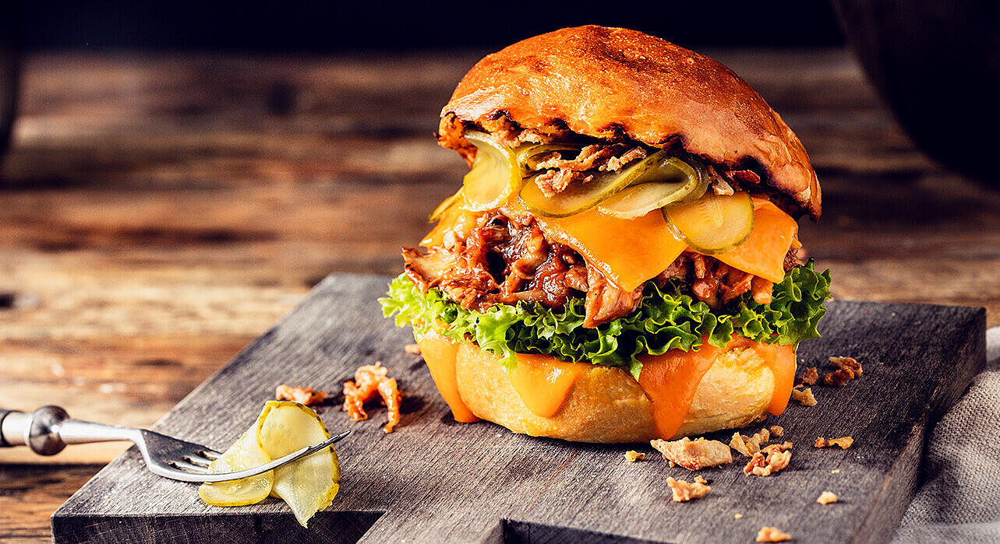

Description
Very delicious handmande american burger with nice tasting sauce.
Wonderful dish afeter school or work.
Ingredients
- BUrger Buns
- Cocumbers
- Lettuce
- Tomato
- Cheese
- Beef
- Onion
- Ketchup
Steps
- 1.Dump your ground meat into a bowl. (We go for ground meat with around 20% fat.) Season it with salt, pepper, and whatever else you want; you can add spices, perhaps, or Worcestershire sauce, or shallots, or chiles.
- 2.Shape your burgers into patties, using your thumb to make an indentation in the center; this will keep the burgers from puffing up. Keep in mind that the burgers will shrink up a bit once you cook them, so make your patties a bit bigger than you want them later.
- 3.Oil your grill or a cast-iron pan, and grill or sear those patties. (How many times to flip them is up for debate -- but when I'm grilling, I flip once so I can get get those nice grill marks.) Cook them until your desired doneness (around 125-130ºF for medium rare, around 1 minute per side for each inch of thickness). But before you take them off the grill...Oil your grill or a cast-iron pan, and grill or sear those patties. (How many times to flip them is up for debate -- but when I'm grilling, I flip once so I can get get those nice grill marks.) Cook them until your desired doneness (around 125-130ºF for medium rare, around 1 minute per side for each inch of thickness). But before you take them off the grill...
- 4....add your cheese and toast your buns. Let the cheese melt while the burgers are still on the grill; to speed things up, you can close the cover....add your cheese and toast your buns. Let the cheese melt while the burgers are still on the grill; to speed things up, you can close the cover.
- 5.Once your burgers iare finished cooking, and your cheese is melty and your buns are nicely charred, throw some condiments and toppings on those burgers. Anything goes. (Really, anything goes.) Bite into it and let those juices run down your chin, and rejoice that it's summer. And then make another round, because now you know how.